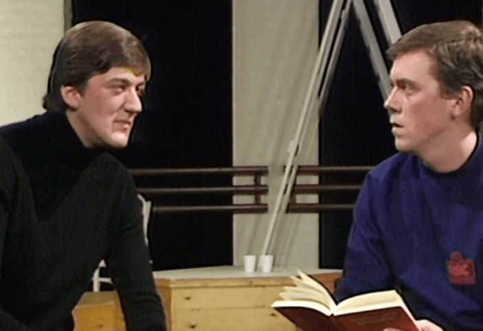
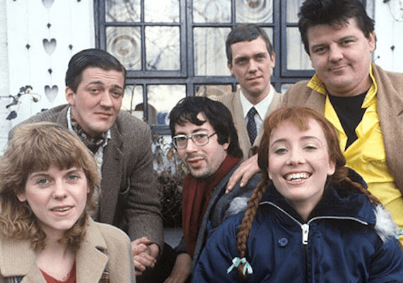

Filmografía
En televisión es mundialmente conocido por su papel protagonista de la serie de televisión House M. D. Laurie ha conseguido gracias a esta el premio Globo de Oro al mejor actor dramático en dos años consecutivos.
House M.D (2004)

The Cellar Tapes (1982)

Alfresco (1983)